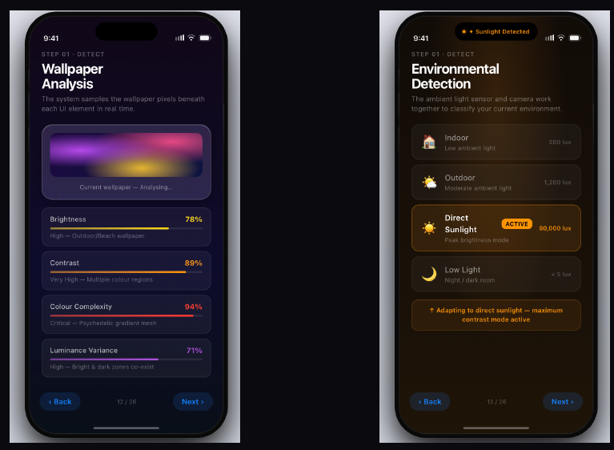
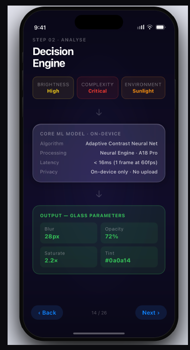
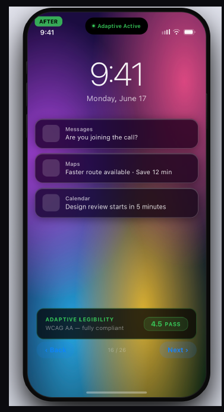
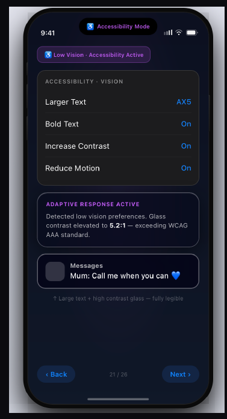
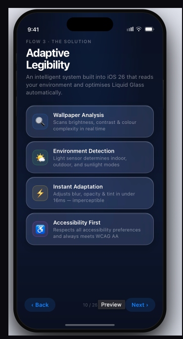

The problem
UNDER CONSTRUCTION
"Team Apple" approached the project from three directions: public and reviewer reaction to the release; the revisions Apple itself shipped in subsequent point updates; and our own measurements of the UI shipped against WCAG 2.2. The complaints clustered, and they were not about taste. Text over bright or busy backgrounds fell below the 4.5:1 contrast ratio that WCAG 2.2 AA requires for body text, and the failure was worst exactly where phones get used most — outdoors.
Apple's own hotfixes were instructive. They increased opacity in specific components, which read as an admission that the problem is real, and as a concession that the fix so far has been piecemeal rather than systemic.
Who it fails
Low contrast is an inconvenience for most people and a barrier for some. We scoped to four groups: users with low vision, users in high-glare environments, older users, and users who simply wanted more control over how their device looks.
The decision that shaped everything
The obvious fix is to turn the translucency down. Make the panels opaque, contrast goes up, problem solved.
We rejected it. A uniform fix throws away the aesthetic entirely, which defeats the purpose of a refresh, and it fails the same way the original does — by assuming one setting works everywhere. Liquid Glass is not broken in a dim room over a plain wallpaper. It is broken in direct sunlight over a photograph.
So the system should not have one appearance. It should have a contrast target, and adjust its appearance to hit it.
How it works


Tuning four parameters together rather than one is what preserves the look. Raising opacity alone produces flat grey panels. Raising opacity while lifting saturation and shifting tint keeps the glass reading as glass.


What we kept
Fonts and icons are untouched from Liquid Glass 1.0. The diffusion effect that defines the material stays. The engine darkens backgrounds and cuts reflectiveness only as far as compliance requires, and no further. A user who never opens Settings gets an interface that looks like the one Apple shipped and reads in daylight; a user who wants to push contrast to 7:1 can.
